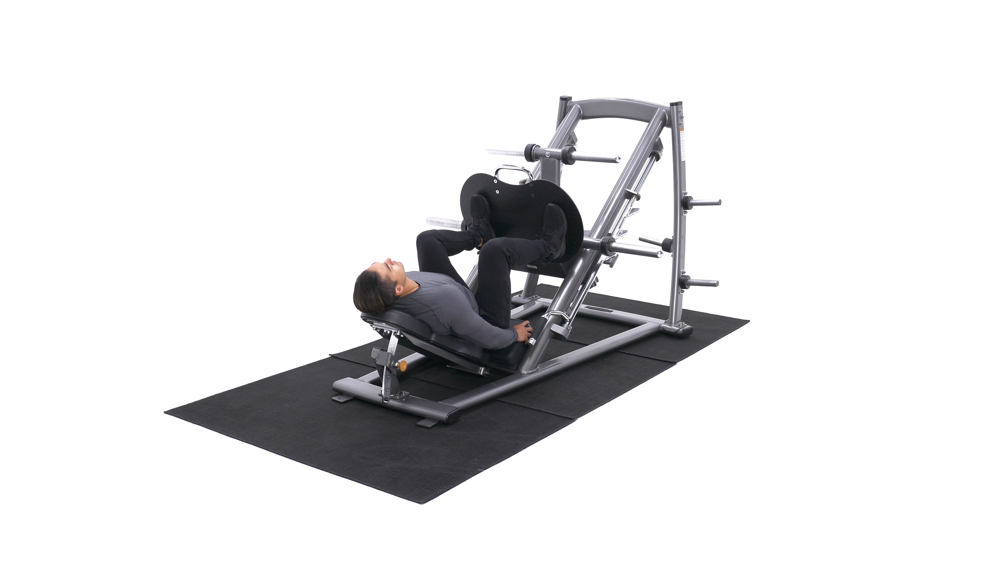
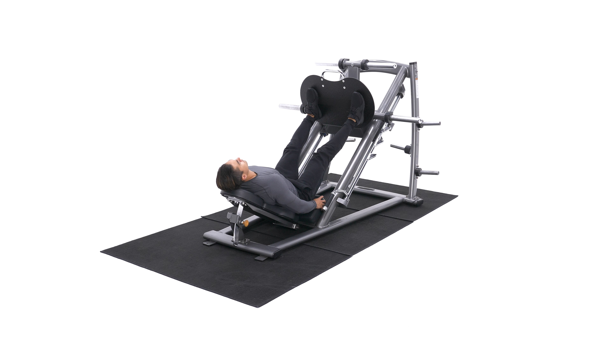

The leg press is a machine exercise targeting the quadriceps. Its favorite among lifters who prefer the seated position to standing with a load on the spine.
1. Using a leg press machine, sit down on the machine and place your legs on the platform directly in front of you at a medium (shoulder width) foot stance. (>Note: For the purposes of this discussion we will use the medium stance described above which targets overall development; however you can choose any of the three stances described in the foot positioning section).
2. Lower the safety bars holding the weighted platform in place and press the platform all the way up until your legs are fully extended in front of you. Tip: Make sure that you do not lock your knees. Your torso and the legs should make a perfect 90-degree angle. This will be your starting position.
3. As you inhale, slowly lower the platform until your upper and lower legs make a 90-degree angle.
4. Pushing mainly with the heels of your feet and using the quadriceps go back to the starting position as you exhale.
5. Repeat for the recommended amount of repetitions and ensure to lock the safety pins properly once you are done. You do not want that platform falling on you fully loaded.
Caution: Always check to make sure that when you re-rack the weight the platform is securely locked.
Variations: All foot stance variations described in the foot stance section.
1. Build stronger, more muscular quadriceps.
2. Safer for the spine than squatting with bad form.
3. Can accommodate quite a bit of weight without needing a spotter.
This is the Leg Press in the down position.
This is the Leg Press in the up position.
